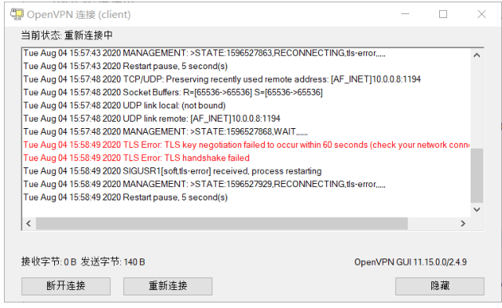
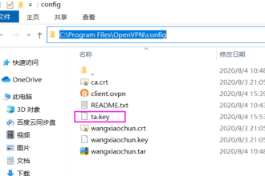
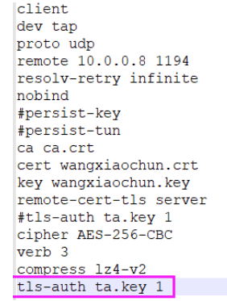
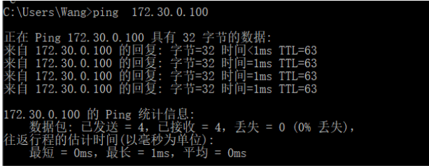
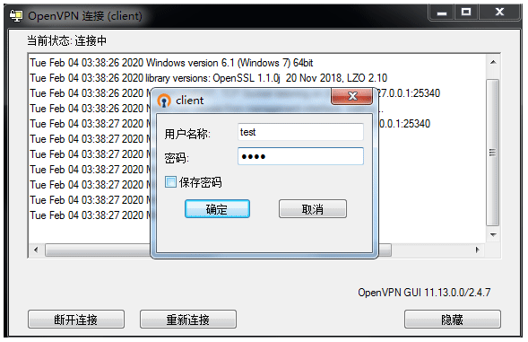

[11:58:01 root@openvpn-server ~]#yum list openvpn
openvpn.x86_64 2.4.10-1.el8 epel
[12:03:21 root@openvpn-server ~]#yum list easy-rsa
easy-rsa.noarch 3.0.8-1.el8 epel
范例: Ubuntu1804 查看OpenVPN版本
[root@ubuntu1804 ~]#apt list openvpn
openvpn/bionic-proposed 2.4.4-2ubuntu1.4 amd64
N: There are 2 additional versions. Please use the '-a' switch to see the
[root@ubuntu1804 ~]#apt-cache madison openvpn
[root@ubuntu1804 ~]#apt-cache madison easy-rsa
cd /etc/openvpn/easy-rsa-server/3
[root@openvpn-server 3]#./easyrsa build-ca nopass # 创建CA证书，不带密码，一路回车 。加 --batch 不需要回车
Note: using Easy-RSA configuration from: /etc/openvpn/easy-rsa-server/3.0.8/vars
Using SSL: openssl OpenSSL 1.1.1g FIPS 21 Apr 2020
Generating RSA private key, 2048 bit long modulus (2 primes)
...................................................................................................................................................................................................+++++
....................................................................+++++
e is 65537 (0x010001)
You are about to be asked to enter information that will be incorporated
into your certificate request.
What you are about to enter is what is called a Distinguished Name or a DN.
There are quite a few fields but you can leave some blank
For some fields there will be a default value,
If you enter '.', the field will be left blank.
-----------------------------------------------
Common Name (eg: your user, host, or server name) [Easy-RSA CA]: #接受默认值，直接回车
CA creation complete and you may now import and sign cert requests.
Your new CA certificate file for publishing is at:
/etc/openvpn/easy-rsa-server/3/pki/ca.crt #生成自签名的证书文件
[root@openvpn-server 3]#tree pki/
pki/
├── ca.crt #生成自签名的证书文件
├── certs_by_serial
├── index.txt
├── index.txt.attr
├── issued
├── openssl-easyrsa.cnf
├── private
│ └── ca.key #生成私钥文件
├── renewed
│ ├── certs_by_serial
│ ├── private_by_serial
│ └── reqs_by_serial
├── reqs
├── revoked
│ ├── certs_by_serial
│ ├── private_by_serial
│ └── reqs_by_serial
├── safessl-easyrsa.cnf
└── serial
#查看一下生成CA相关的文件
[root@openvpn-server 3]#cat pki/serial
01
[root@openvpn-server 3]#ll pki/index.txt
-rw------- 1 root root 0 Jan 26 12:17 pki/index.txt
[root@openvpn-server 3]#ll pki/ca.crt pki/private/ca.key
-rw------- 1 root root 1204 Jan 26 12:17 pki/ca.crt
-rw------- 1 root root 1679 Jan 26 12:17 pki/private/ca.key
[root@openvpn-server 3]#cat pki/ca.crt
[root@openvpn-server 3]#openssl x509 -in pki/ca.crt -noout -text
2.3.3 创建服务端证书申请
#创建服务器证书申请文件，其中server是文件前缀cd /etc/openvpn/easy-rsa-server/3
[root@openvpn-server 3]#./easyrsa gen-req server nopass # 生成服务端证书，不使用密码
Note: using Easy-RSA configuration from: /etc/openvpn/easy-rsa-server/3.0.8/vars
Using SSL: openssl OpenSSL 1.1.1g FIPS 21 Apr 2020
Generating a RSA private key
writing new private key to '/etc/openvpn/easy-rsa-server/3/pki/easy-rsa-11496.syBWUN/tmp.KB9HvC'
------------------------------------------------------------------------------------------------
You are about to be asked to enter information that will be incorporated
into your certificate request.
What you are about to enter is what is called a Distinguished Name or a DN.
There are quite a few fields but you can leave some blank
For some fields there will be a default value,
If you enter '.', the field will be left blank.
-----------------------------------------------
Common Name (eg: your user, host, or server name) [server]: 接受Common Name，可以使用默认
Keypair and certificate request completed. Your files are:
req: /etc/openvpn/easy-rsa-server/3/pki/reqs/server.req #生成的申请文件
key: /etc/openvpn/easy-rsa-server/3/pki/private/server.key #生成的私钥文件
[12:29:17 root@openvpn-server 3]#tree pki/
pki/
├── ca.crt
├── certs_by_serial
├── index.txt
├── index.txt.attr
├── issued
├── openssl-easyrsa.cnf
├── private
│ ├── ca.key
│ └── server.key #私钥文件
├── renewed
│ ├── certs_by_serial
│ ├── private_by_serial
│ └── reqs_by_serial
├── reqs
│ └── server.req #申请文件
├── revoked
│ ├── certs_by_serial
│ ├── private_by_serial
│ └── reqs_by_serial
├── safessl-easyrsa.cnf
└── serial
2.3.4 签发服务端证书
查看颁发证书命令用法
cd /etc/openvpn/easy-rsa-server/3
[root@openvpn-server 3]#./easyrsa help sign
Note: using Easy-RSA configuration from: /etc/openvpn/easy-rsa-server/3.0.8/vars
sign-req
Sign a certificate request of the defined type. must be a known
type such as 'client', 'server', 'serverClient', or 'ca' (or a user-added type.)
This request file must exist in the reqs/ dir and have a .req file
extension. See import-req below for importing reqs from other sources.
颁发服务端证书
#将上面server.req的申请,颁发server类型的证书cd /etc/openvpn/easy-rsa-server/3
[root@openvpn-server 3]#./easyrsa sign server server #签发服务端证书
Note: using Easy-RSA configuration from: /etc/openvpn/easy-rsa-server/3.0.8/vars
Using SSL: openssl OpenSSL 1.1.1g FIPS 21 Apr 2020
You are about to sign the following certificate.
Please check over the details shown below for accuracy. Note that this request
has not been cryptographically verified. Please be sure it came from a trusted
source or that you have verified the request checksum with the sender.
Request subject, to be signed as a server certificate for 3650 days: #可以看到vars文件指定的有效期subject=
commonName = server
Type the word 'yes' to continue, or any other input to abort.
Confirm request details: yes #输入yes回车
Using configuration from /etc/openvpn/easy-rsa-server/3/pki/easy-rsa-11533.UjZ9m9/tmp.xGm4NL
Check that the request matches the signature
Signature ok
The Subject's Distinguished Name is as followscommonName :ASN.1 12:'server'Certificate is to be certified until Jan 24 04:31:32 2031 GMT (3650 days)Write out database with 1 new entriesData Base UpdatedCertificate created at: /etc/openvpn/easy-rsa-server/3/pki/issued/server.crt#生成服务器证书文件
cd /etc/openvpn/easy-rsa-server/3
#创建Diffie-Hellman密钥#方法1
[root@openvpn-server 3]#./easyrsa gen-dh
Note: using Easy-RSA configuration from: /etc/openvpn/easy-rsa-server/3.0.8/vars
Using SSL: openssl OpenSSL 1.1.1g FIPS 21 Apr 2020
Generating DH parameters, 2048 bit long safe prime, generator 2
This is going to take a long time
...................+ #需要等一会
DH parameters of size 2048 created at /etc/openvpn/easy-rsa-server/3/pki/dh.pem
#查看生成的文件
[root@openvpn-server 3]#ll pki/dh.pem
-rw------- 1 root root 424 Jan 26 12:37 pki/dh.pem
[root@openvpn-server 3]#cat pki/dh.pem
-----BEGIN DH PARAMETERS-----
MIIBCAKCAQEAypLcHbOieMk67cANDM+IBDD0w6SP3vJ9vY4Bz58SX017qLI9qLSD
CCRWIF7Y57zVHkqrXHsVJpSXZPBGTWPKg6LsMYrSrQctxajikAzkA2xqlezJquFz
oGkhR9P1xkA7Kbj0+w0/0lOxkPuVq6WbqSa2JBNaYmOzXRz1I4BZnR0CCKoI/WMB
WZ2cTeQcVI1AYqN9prOwWZwXZks420RUmnDXAL7BtvfElyKtgiZXPzQpiF4Psjhb
gNAwBnHJiV1vj1dTLg6CtU9e+yuk7nuz+74OhF3y2jfF3odg+7ZGWNlkoMP1wq6Z
eONjJO9n3cxLInPXDhJ4NfbwTh6LOKQ6YwIBAg==
-----END DH PARAMETERS-----
#方法2
[root@openvpn-server 3]#openssl dhparam -out /root/dh2048.pem 2048
[root@openvpn-server 3]#cd /etc/openvpn/easy-rsa-client/3
[root@openvpn-server 3]#pwd
/etc/openvpn/easy-rsa-client/3
#生成客户端用户的证书申请
[root@openvpn-server 3]#./easyrsa gen-req client-x nopass
Note: using Easy-RSA configuration from: /etc/openvpn/easy-rsa-client/3.0.8/vars
Using SSL: openssl OpenSSL 1.1.1g FIPS 21 Apr 2020
Generating a RSA private key
....+++++
......+++++
writing new private key to '/etc/openvpn/easy-rsa-client/3/pki/easy-rsa-11853.FRpJUj/tmp.Jr13E6'
------------------------------------------------------------------------------------------------
You are about to be asked to enter information that will be incorporated
into your certificate request.
What you are about to enter is what is called a Distinguished Name or a DN.
There are quite a few fields but you can leave some blank
For some fields there will be a default value,
If you enter '.', the field will be left blank.
-----------------------------------------------
Common Name (eg: your user, host, or server name) [client-x]: #接受默认回车
Keypair and certificate request completed. Your files are:
req: /etc/openvpn/easy-rsa-client/3/pki/reqs/client-x.req #申请证书文件
key: /etc/openvpn/easy-rsa-client/3/pki/private/client-x.key #私钥文件#生成两个新文件
[root@openvpn-server 3]#tree
.
├── easyrsa
├── openssl-easyrsa.cnf
├── pki
│ ├── openssl-easyrsa.cnf
│ ├── private
│ │ └── client-x.key
│ ├── reqs
│ │ └── client-x.req
│ └── safessl-easyrsa.cnf
├── vars
└── x509-types
├── ca
├── client
├── code-signing
├── COMMON
├── email
├── kdc
├── server
└── serverClient
2.3.8 签发客户端证书
[root@openvpn-server 3]#cd /etc/openvpn/easy-rsa-server/3
[root@openvpn-server 3]#pwd
/etc/openvpn/easy-rsa-server/3
#导入客户端证书请求文件到CA的工作目录，让CA能识别到这个请求文件
[root@openvpn-server 3]#./easyrsa import-req /etc/openvpn/easy-rsa-client/3/pki/reqs/client-x.req client-x
Note: using Easy-RSA configuration from: /etc/openvpn/easy-rsa-server/3.0.8/vars
Using SSL: openssl OpenSSL 1.1.1g FIPS 21 Apr 2020
The request has been successfully imported with a short name of: client-x
You may now use this name to perform signing operations on this request.
[root@openvpn-server 3]#tree pki/
pki/
├── ca.crt
├── certs_by_serial
│ └── 5D3B930AA9D6B0AF69E65FA76C6251C4.pem
├── dh.pem
├── index.txt
├── index.txt.attr
├── index.txt.attr.old
├── index.txt.old
├── issued
│ └── server.crt
├── openssl-easyrsa.cnf
├── private
│ ├── ca.key
│ └── server.key
├── renewed
│ ├── certs_by_serial
│ ├── private_by_serial
│ └── reqs_by_serial
├── reqs
│ ├── server.req
│ └── client-x.req #导入的文件
├── revoked
│ ├── certs_by_serial
│ ├── private_by_serial
│ └── reqs_by_serial
├── safessl-easyrsa.cnf
├── serial
└── serial.old
[root@openvpn-server 3]#ll pki/reqs/client-x.req /etc/openvpn/easy-rsa-client/3/pki/reqs/client-x.req
-rw------- 1 root root 891 Jan 26 13:53 /etc/openvpn/easy-rsa-client/3/pki/reqs/client-x.req
-rw------- 1 root root 891 Jan 26 13:55 pki/reqs/client-x.req
#修改给客户端颁发的证书的有效期
[root@openvpn-server 3]#vim vars
#建议修改给客户端颁发证书的有效期,可适当减少,比如:90天
set_var EASYRSA_CERT_EXPIRE 180 #修改之前的3650为180#签发客户端证书
[root@openvpn-server 3]#./easyrsa sign client client-x
Note: using Easy-RSA configuration from: /etc/openvpn/easy-rsa-server/3.0.8/vars
Using SSL: openssl OpenSSL 1.1.1g FIPS 21 Apr 2020
You are about to sign the following certificate.
Please check over the details shown below for accuracy. Note that this request
has not been cryptographically verified. Please be sure it came from a trusted
source or that you have verified the request checksum with the sender.
Request subject, to be signed as a client certificate for 180 days:
subject=
commonName = client-x
Type the word 'yes' to continue, or any other input to abort.
Confirm request details: yes #输入yes后回车
Using configuration from /etc/openvpn/easy-rsa-server/3/pki/easy-rsa-11993.LhxZXn/tmp.Fl00WC
Check that the request matches the signature
Signature ok
The Subject's Distinguished Name is as followscommonName :ASN.1 12:'client-x'Certificate is to be certified until Jul 25 05:59:46 2021 GMT (180 days)Write out database with 1 new entriesData Base UpdatedCertificate created at: /etc/openvpn/easy-rsa-server/3/pki/issued/client-x.crt#证书文件[root@openvpn-server 3]#tree pki/pki/├── ca.crt├── certs_by_serial│ ├── 5D3B930AA9D6B0AF69E65FA76C6251C4.pem│ └── 8EB7E418B1FE1715BCBB73A513498893.pem├── dh.pem├── index.txt├── index.txt.attr├── index.txt.attr.old├── index.txt.old├── issued│ ├── server.crt│ └── client-x.crt #生成客户端证书├── openssl-easyrsa.cnf├── private│ ├── ca.key│ └── server.key├── renewed│ ├── certs_by_serial│ ├── private_by_serial│ └── reqs_by_serial├── reqs│ ├── server.req│ └── client-x.req├── revoked│ ├── certs_by_serial│ ├── private_by_serial│ └── reqs_by_serial├── safessl-easyrsa.cnf├── serial└── serial.old[root@openvpn-server 3]#cat pki/index.txtV 310124043132Z 5D3B930AA9D6B0AF69E65FA76C6251C4 unknown /CN=serverV 210725055946Z 8EB7E418B1FE1715BCBB73A513498893 unknown /CN=client-x[root@openvpn-server 3]#ll pki/issued/total 16-rw------- 1 root root 4608 Jan 26 12:31 server.crt-rw------- 1 root root 4499 Jan 26 13:59 client-x.crt[root@openvpn-server 3]#ll pki/certs_by_serial/total 16-rw------- 1 root root 4608 Jan 26 12:31 5D3B930AA9D6B0AF69E65FA76C6251C4.pem-rw------- 1 root root 4499 Jan 26 13:59 8EB7E418B1FE1715BCBB73A513498893.pem
[root@openvpn-server client-x]#vim /etc/openvpn/server.conf
#在tcp模式下开启通知
proto tcp
pexplicit-exit-notify 1
[root@openvpn-server client-x]#systemctl restart openvpn@server
Job for openvpn@server.service failed because the control process exited with error code.
See "systemctl status openvpn@server.service" and "journalctl -xe" for details.
[root@centos8 ~]#tail /var/log/openvpn/openvpn.log -f -n0
[root@openvpn-server ~]#openvpn --genkey --secret /etc/openvpn/certs/ta.key
[root@openvpn-server ~]#cat /etc/openvpn/certs/ta.key
## 2048 bit OpenVPN static key#
-----BEGIN OpenVPN Static key V1-----
98f2e8b46308ad6c40fdbcb53cbafce6
e3f7970ddae64849f4c160047fc88866
f717dab259981ea836eeb7ef31a778d9
1cc8b20962c79cb3d2fda168819bc8c6
bc8386f0de5264712d8ebb358c8c8f2a
dcd5a1e15a3e3f76346e84496ba12052
2c53a5f055486c9200ef0855d2df9e9e
ecc71a8c4dd8bec1ff15ac20e44aec77
52c289b343a20979c3b52ea466585073
c14752e40e6b8ce5ef5d0f8ed894a82e
ff8c6f784c7ec9b87f51cdaad9ee06b2
ea22307d87c1e6b31292819e0d8ddcf7
dc324b5a7e968ae1b3334f61af6a4b6e
91a2992a580edbd4b8c584bfbe7fa8f4
1a22ca55777827c49b237157d03d1d68
75fc0d4eb632da7e61d258594ade093b
-----END OpenVPN Static key V1-----
[root@openvpn-server ~]#ll /etc/openvpn/certs/
total 24
-rw------- 1 root root 1204 Jan 26 14:03 ca.crt
-rw------- 1 root root 424 Jan 26 14:04 dh.pem
-rw------- 1 root root 4608 Jan 26 14:04 server.crt
-rw------- 1 root root 1704 Jan 26 14:04 server.key
-rw------- 1 root root 636 Jan 26 15:38 ta.key
[root@openvpn-server ~]#vim /etc/openvpn/server.conf
tls-auth /etc/openvpn/certs/ta.key 0 #服务器端为0，客户端为1
[root@centos8 ~]#systemctl restart openvpn@server.service
#日志提示出错
root@centos8 ~]#tail -n 20 /var/log/openvpn/openvpn.log -f
Tue Aug 4 15:56:30 2020 TLS Error: cannot locate HMAC in incoming packet from
[AF_INET]10.0.0.1:59743
Tue Aug 4 15:56:39 2020 TLS Error: cannot locate HMAC in incoming packet from
[AF_INET]10.0.0.1:59743
Tue Aug 4 15:56:45 2020 TLS Error: cannot locate HMAC in incoming packet from
[AF_INET]10.0.0.1:59073
客户端无法直接连接

将ta.key 传到客户端相关目录下

修改客户端配置文件clent.ovpn,添加一行

客户端重新连接成功

客户端配置文件需要添加tls-auth ta.key 1,并把key文件放到客户端中
4.2 设置客户端的私钥密码增强安全性
新建一个账户cy，并且设置证书密码，提高证书及登录VPN的安全性。
4.2.1 创建新用户,生成对应的有密码的私钥和证书申请
cd /etc/openvpn/easy-rsa-client/3
#./easyrsa gen-req cy nopass # 不带密码的证书
./easyrsa gen-req cy # 带密码的证书 123456
[root@openvpn-server 3]#./easyrsa gen-req cy
Note: using Easy-RSA configuration from: /etc/openvpn/easy-rsa-client/3.0.8/vars
Using SSL: openssl OpenSSL 1.1.1g FIPS 21 Apr 2020
Generating a RSA private key
..............+++++
....................+++++
writing new private key to '/etc/openvpn/easy-rsa-client/3/pki/easy-rsa-14457.v8A2IC/tmp.k97esu'
Enter PEM pass phrase: #输入2遍密码
Verifying - Enter PEM pass phrase:
----------------------------------
You are about to be asked to enter information that will be incorporated
into your certificate request.
What you are about to enter is what is called a Distinguished Name or a DN.
There are quite a few fields but you can leave some blank
For some fields there will be a default value,
If you enter '.', the field will be left blank.
-----------------------------------------------
Common Name (eg: your user, host, or server name) [cy]: #默认确认
Keypair and certificate request completed. Your files are:
req: /etc/openvpn/easy-rsa-client/3/pki/reqs/cy.req
key: /etc/openvpn/easy-rsa-client/3/pki/private/cy.key
#让服务器时间改为2年后时间
[root@openvpn-server cy]#date -s '2 year'
Thu Jan 26 16:08:26 CST 2023
#服务器端日志中会显示用户证书过期
[root@openvpn-server cy]#tail -f /var/log/openvpn/openvpn.log -n0
Thu Jan 26 16:10:16 2023 TCP connection established with [AF_INET]110.17.5.83:20296
Thu Jan 26 16:10:16 2023 110.17.5.83:20296 TLS: Initial packet from [AF_INET]110.17.5.83:20296, sid=5b28249e 72485450
Thu Jan 26 16:10:17 2023 110.17.5.83:20296 VERIFY OK: depth=1, CN=Easy-RSA CA
Thu Jan 26 16:10:17 2023 110.17.5.83:20296 VERIFY ERROR: depth=0, error=certificate has expired: CN=cy, serial=311680221580796027677648559459392328591
Thu Jan 26 16:10:17 2023 110.17.5.83:20296 OpenSSL: error:1417C086:SSL routines:tls_process_client_certificate:certificate verify failed
Thu Jan 26 16:10:17 2023 110.17.5.83:20296 TLS_ERROR: BIO read tls_read_plaintext error
Thu Jan 26 16:10:17 2023 110.17.5.83:20296 TLS Error: TLS object -> incoming plaintext read error
Thu Jan 26 16:10:17 2023 110.17.5.83:20296 TLS Error: TLS handshake failed
Thu Jan 26 16:10:17 2023 110.17.5.83:20296 Fatal TLS error (check_tls_errors_co), restarting
Thu Jan 26 16:10:17 2023 110.17.5.83:20296 SIGUSR1[soft,tls-error] received, client-instance restarting
4.3.2 证书手动注销
4.3.2.1 查看当前证书的有效性,有效为V,无效为R
[16:11:54 root@openvpn-server ~]#cat /etc/openvpn/easy-rsa-server/3/pki/index.txt
V 310124043132Z 5D3B930AA9D6B0AF69E65FA76C6251C4 unknown /CN=server
V 210725055946Z 8EB7E418B1FE1715BCBB73A513498893 unknown /CN=client-x
V 210725075159Z EA7B6D5BC57A40FD5959D1740320938F unknown /CN=cy
4.3.2.2 吊销指定的用户的证书
[root@openvpn-server ~]#cd /etc/openvpn/easy-rsa-server/3
[root@openvpn-server 3]#./easyrsa revoke cy
Note: using Easy-RSA configuration from: /etc/openvpn/easy-rsa-server/3.0.8/vars
Using SSL: openssl OpenSSL 1.1.1g FIPS 21 Apr 2020
Please confirm you wish to revoke the certificate with the following subject:
subject=
commonName = cy
Type the word 'yes' to continue, or any other input to abort.
Continue with revocation: yes
Using configuration from /etc/openvpn/easy-rsa-server/3/pki/easy-rsa-14869.nncxHf/tmp.36WIhl
Revoking Certificate EA7B6D5BC57A40FD5959D1740320938F.
Data Base Updated
IMPORTANT!!!
Revocation was successful. You must run gen-crl and upload a CRL to your
infrastructure in order to prevent the revoked cert from being accepted.
#查看当前证书的有效性,有效为V,无效为R
[root@centos8 3]#cat /etc/openvpn/easy-rsa-server/3/pki/index.txt
V 310124043132Z 5D3B930AA9D6B0AF69E65FA76C6251C4 unknown /CN=server
V 210725055946Z 8EB7E418B1FE1715BCBB73A513498893 unknown /CN=client-x
R 210725075159Z EA7B6D5BC57A40FD5959D1740320938F unknown /CN=cy
#当前断开客户端连接,me用户仍然能连接成功
4.3.2.3 生成证书吊销列表
#每次吊销证书后都需要更新证书吊销列表文件,并且需要重启OpenVPN服务
[root@openvpn-server 3]#./easyrsa gen-crl
Note: using Easy-RSA configuration from: /etc/openvpn/easy-rsa-server/3.0.8/vars
Using SSL: openssl OpenSSL 1.1.1g FIPS 21 Apr 2020
Using configuration from /etc/openvpn/easy-rsa-server/3/pki/easy-rsa-14912.pXdWC2/tmp.JqsCVv
An updated CRL has been created.
CRL file: /etc/openvpn/easy-rsa-server/3/pki/crl.pem
[root@openvpn-server 3]#cat pki/crl.pem
-----BEGIN X509 CRL-----
MIIB3DCBxQIBATANBgkqhkiG9w0BAQsFADAWMRQwEgYDVQQDDAtFYXN5LVJTQSBD
QRcNMjEwMTI2MDgxNDQzWhcNMjEwNzI1MDgxNDQzWjAkMCICEQDqe21bxXpA/VlZ
0XQDIJOPFw0yMTAxMjYwODEzMDhaoFUwUzBRBgNVHSMESjBIgBQoyNfaufa2jaEC
RtJ+9ve4X5qANKEapBgwFjEUMBIGA1UEAwwLRWFzeS1SU0EgQ0GCFBB9VrzPLTr+
IL6acSTyhMQ3Yac4MA0GCSqGSIb3DQEBCwUAA4IBAQDALTvWucW3kSW5Dt14uENQ
yF1ad+FkcXxXa3Y3PKR8eQOmc9vL9vTsctR4SvuIT70UmNVZhkGAk+Ioi5SBIKJa
CgMxpZe6u9Slwl5kNy4IVuQYzu59e3azUOb6v4B0rpEI2WxW5Van/niGLKOg/wJt
Nft5IJCrTQF6NBjDugqV9/EIrBa9Pks2qQsShGCj/+VYapGgY7UJxL/1H5STt+Sd
t2CDqj4kFe+yXAgo8CwM2zzPtWkc1pg4U1BwHkVDYZvCoklZshh4a17KfdubXTPQ
NLLMuDu3J0R/Ld2IumxbBl11ys5AOoUG1xVoNQjqV+YJkDDOZOV88FVoloGX/gJo
-----END X509 CRL-----
#删除已离职备撤销的账户证书cd /etc/openvpn/easy-rsa-client/3/
rm -f pki/private/me.key
rm -f pki/reqs/me.req
rm -rf /etc/openvpn/client/me/*
rm -f /etc/openvpn/easy-rsa-server/3/pki/reqs/me.req
rm -f /etc/openvpn/easy-rsa-server/3/pki/issued/me.crt
#删除之前的带R的吊销记录,此为可选项
[root@centos8 3]#vim /etc/openvpn/easy-rsa-server/3/pki/index.txt
#重新生成新的账户证书申请和私钥
[root@centos8 3]#cd /etc/openvpn//easy-rsa-client/3
[root@centos8 3]#./easyrsa gen-req me
Note: using Easy-RSA configuration from: /etc/openvpn/easy-rsa-client/3.0.7/vars
Using SSL: openssl OpenSSL 1.1.1c FIPS 28 May 2019
Generating a RSA private key
..................................+++++
.........+++++
writing new private key to '/etc/openvpn/easy-rsa-client/3/pki/easy-rsa-26582.hrORzD/tmp.bTOf5p'
Enter PEM pass phrase:
Verifying - Enter PEM pass phrase:
-----
You are about to be asked to enter information that will be incorporated
into your certificate request.
What you are about to enter is what is called a Distinguished Name or a DN.
There are quite a few fields but you can leave some blank
For some fields there will be a default value,
If you enter '.', the field will be left blank.
-----
Common Name (eg: your user, host, or server name) [me]:#直接回车
Keypair and certificate request completed. Your files are:
req: /etc/openvpn/easy-rsa-client/3/pki/reqs/me.req
key: /etc/openvpn/easy-rsa-client/3/pki/private/me.key
#CA导入证书并签发
[root@centos8 3]#cd /etc/openvpn/easy-rsa-server/3
[root@centos8 3]#./easyrsa import-req /etc/openvpn/easy-rsa-client/3/pki/reqs/me.req me
[root@centos8 3]#./easyrsa sign client me
......
Confirm request details: yes #输入yes
......
Certificate created at: /etc/openvpn/easy-rsa-server/3/pki/issued/me.crt
#生成相关文件
cp /etc/openvpn/easy-rsa-server/3/pki/issued/me.crt /etc/openvpn/client/me/
cp /etc/openvpn/easy-rsa-client/3/pki/private/me.key /etc/openvpn/client/me/
cp /etc/openvpn/certs/{ca.crt,dh.pem,ta.key} /etc/openvpn/client/me/
cp /etc/openvpn/client/zcici/client.ovpn /etc/openvpn/client/me/
#修改客户端配置文件
[root@centos8 3]#vim /etc/openvpn/client/me/client.ovpn
client
dev tun
proto tcp
remote 10.0.0.8 1194
resolv-retry infinite
nobind
#persist-key#persist-tun
ca ca.crt
cert me.crt
key me.key
remote-cert-tls server
tls-auth ta.key 1
cipher AES-256-CBC
verb 3
compress lz4-v2
[root@centos8 ~]#tree /etc/openvpn/client/me
/etc/openvpn/client/me
├── ca.crt
├── client.ovpn
├── dh.pem
├── me.crt
├── me.key
└── ta.key
#将/etc/openvpn/client/me所有文件打包传到客户端用
[root@centos8 ~]#bash openvpn-user-crt.sh
请输入用户的姓名拼音(如:): me
Note: using Easy-RSA configuration from: /etc/openvpn/easy-rsa-client/3.0.7/vars
Using SSL: openssl OpenSSL 1.1.1c FIPS 28 May 2019
Generating a RSA private key
................................................................................
................................................................................
............................+++++
............................................................................++++
+
writing new private key to '/etc/openvpn/easy-rsa-client/3/pki/easy-rsa-13504.eqdKk5/tmp.kowkjQ'
-----
You are about to be asked to enter information that will be incorporated
into your certificate request.
What you are about to enter is what is called a Distinguished Name or a DN.
There are quite a few fields but you can leave some blank
For some fields there will be a default value,
If you enter '.', the field will be left blank.
-----
Common Name (eg: your user, host, or server name) [me]:
Keypair and certificate request completed. Your files are:
req: /etc/openvpn/easy-rsa-client/3/pki/reqs/me.req
key: /etc/openvpn/easy-rsa-client/3/pki/private/me.key
Note: using Easy-RSA configuration from: /etc/openvpn/easy-rsa-server/3.0.7/vars
Using SSL: openssl OpenSSL 1.1.1c FIPS 28 May 2019
The request has been successfully imported with a short name of: me
You may now use this name to perform signing operations on this request.
Note: using Easy-RSA configuration from: /etc/openvpn/easy-rsa-server/3.0.7/vars
Using SSL: openssl OpenSSL 1.1.1c FIPS 28 May 2019
You are about to sign the following certificate.
Please check over the details shown below for accuracy. Note that this request
has not been cryptographically verified. Please be sure it came from a trusted
source or that you have verified the request checksum with the sender.
Request subject, to be signed as a client certificate for 90 days:
subject=
commonName = me
Type the word 'yes' to continue, or any other input to abort.
Confirm request details: Using configuration from /etc/openvpn/easy-rsa-
server/3/pki/easy-rsa-13552.TvELex/tmp.Gx7dds
Check that the request matches the signature
Signature ok
The Subject's Distinguished Name is as followscommonName :ASN.1 12:'me'Certificate is to be certified until Nov 3 13:50:50 2020 GMT (90 days)Write out database with 1 new entriesData Base UpdatedCertificate created at: /etc/openvpn/easy-rsa-server/3/pki/issued/me.crt证书存放路径:/etc/openvpn/client/me,证书文件如下:******************************************************************total 28-rw------- 1 root root 1204 Aug 5 21:50 ca.crt-rw-r--r-- 1 root root 225 Aug 5 21:50 client.ovpn-rw------- 1 root root 424 Aug 5 21:50 dh.pem-rw------- 1 root root 4492 Aug 5 21:50 me.crt-rw------- 1 root root 1704 Aug 5 21:50 me.key-rw------- 1 root root 636 Aug 5 21:50 ta.key******************************************************************证书的打包文件已生成: /root/me.zip [ OK ]
[root@openvpn-server ~]# cat /etc/openvpn/server.conf
port 1194
proto tcp
#pexplicit-exit-notify 1
dev tun
ca /etc/openvpn/certs/ca.crt
cert /etc/openvpn/certs/server.crt
key /etc/openvpn/certs/server.key
dh /etc/openvpn/certs/dh.pem
server 10.0.0.0 255.255.255.0
push "route 172.30.0.0 255.255.255.0"
keepalive 10 120
cipher AES-256-CBC
compress lz4-v2
push "compress lz4-v2"
;comp-lzo
max-clients 2048
user openvpn
group openvpn
status /var/log/openvpn/openvpn-status.log
log-append /var/log/openvpn/openvpn.log
verb 3
mute 200
tls-auth /etc/openvpn/certs/ta.key 0
crl-verify /etc/openvpn/easy-rsa-server/3/pki/crl.pem # 第一次吊销证时需要编辑配置文件调用吊销证书的文件
4.4.2 client 端配置
[root@openvpn-server ~]# cat /etc/openvpn/client-file/client.ovpn
client
dev tun
proto tcp
remote 39.98.146.209 1194
resolv-retry infinite
nobind
#persist-key#persist-tun
ca ca.crt
cert client.crt
key client.key
remote-cert-tls server
#tls-auth ta.key 1
cipher AES-256-CBC
verb 3
compress lz4-v2
tls-auth ta.key 1
4.5 插件
4.5.1 脚本插件
脚本插件可以通过在服务器端配置文件中添加 auth-user-pass-verify
指令来使用
auth-user-pass-verify auth-pam.pl via-file
范例：基于用户名密码登录
#1.首先我们需要编写一个用户认证的脚本 (脚本是由openvpn官网提供的)
cat <<\EOF >> /etc/openvpn/checkpsw.sh
#!/bin/sh############################################################ checkpsw.sh (C) 2004 Mathias Sundman ## This script will authenticate OpenVPN users against# a plain text file. The passfile should simply contain# one row per user with the username first followed by# one or more space(s) or tab(s) and then the password.PASSFILE="/etc/openvpn/psw-file"LOG_FILE="/etc/openvpn/openvpn-password.log"TIME_STAMP=`date "+%Y-%m-%d %T"`###########################################################if [ ! -r "${PASSFILE}" ]; then echo "${TIME_STAMP}: Could not open password file \"${PASSFILE}\" for reading." >> ${LOG_FILE} exit 1fiCORRECT_PASSWORD=`awk '!/^;/&&!/^#/&&$1=="'${username}'"{print $2;exit}' ${PASSFILE}`if [ "${CORRECT_PASSWORD}" = "" ]; then echo "${TIME_STAMP}: User does not exist: username=\"${username}\", password=\"${password}\"." >> ${LOG_FILE} exit 1fiif [ "${password}" = "${CORRECT_PASSWORD}" ]; then echo "${TIME_STAMP}: Successful authentication: username=\"${username}\"." >> ${LOG_FILE} exit 0fiecho "${TIME_STAMP}: Incorrect password: username=\"${username}\", password=\"${password}\"." >> ${LOG_FILE}exit 1EOF
chmod 755 /etc/openvpn/checkpsw.sh # 脚本加执行权限#2.现在我们配置用户密码文件
cat /etc/openvpn/psw-file
abcdocker 123456
abc 123456
test test
#前面为用户名，后面为密码。 中间使用空格分开#3.配置openvpn的server.conf
cat >>/etc/openvpn/server.conf<<EOF
script-security 3 system #允许通过环境变量将密码传递给脚本 auth-user-pass-verify /etc/openvpn/checkpsw.sh via-env #指定用户认证脚本client-cert-not-required #不使用客户端证书，使用密码对username-as-common-name #使用认证用户名，不使用证书的common nameEOF#在service.conf最后一行添加#4.修改client.ovpn
client
dev tun
proto tcp
remote 192.168.0.11 1194
resolv-retry infinite
nobind
persist-key
persist-tun
ca ca.crt
;cert cyh.crt #注释
;key cyh.key #注释
tls-auth ta.key 1
cipher AES-256-CBC
comp-lzo
verb 3
auth-user-pass #使用用户名密码登录openvpn服务器#主要是注释crt和key路径，以及添加一行auth-user-pass#5.重启openvpn
systemctl restart openvpn@server

4.5.2 mysql插件
范例：
#1.创建mysql库表
mysql> create database openvpn;
mysql> use openvpn;
#创建用户表
mysql> create table vpnuser (
name char (100) not null,
password char (255) default null,
active int (10) not null default 1,
primary key (name)
);
mysql> desc vpnuser;
#创建登录表
mysql> create table logtable (
msg char (254),
user char (100),
pid char (100),
host char (100),
rhost char (100),
time char (100)
);
mysql> desc logtable;
#插入一条用户数据，用户名test1 密码test1
mysql> insert into vpnuser (name,password) values ('test1',password('test1'));
#创建库授权连接账号
mysql> grant all on openvpn.* to vpn@'localhost' identified by 'vpn';
mysql> flush privileges;
#2.安装pam_mysql模块
yum install pam_mysql -y
#配置pam_mysql模块
vim /etc/pam.d/openvpn
auth sufficient pam_mysql.so user=vpn passwd=vpn host=localhost db=openvpn table=vpnuser usercolumn=name passwdcolumn=password [where=vpnuser.active=1] sqllog=0 crypt=2 sqllog=true logtable=logtable logmsgcolumn=msg logusercolumn=user logpidcolumn=pid loghostcolumn=host logrhostcolumn=rhost logtimecolumn=time
account required pam_mysql.so user=vpn passwd=vpn host=localhost db=openvpn table=vpnuser usercolumn=name passwdcolumn=password [where=vpnuser.active=1] sqllog=0 crypt=2 sqllog=true logtable=logtable logmsgcolumn=msg logusercolumn=user logpidcolumn=pid loghostcolumn=host logrhostcolumn=rhost logtimecolumn=time
#使用testsaslauthd验证登录情况，如果出现下面的情况，说明我们的配置是正确的
[root@iosvpn ~]# saslauthd -a pam
[root@iosvpn ~]# testsaslauthd -u test1 -p test1 -s openvpn
0: OK "Success."#3.安装Openvpn服务器auth-pam插件
yum install pam_devel -y
wget http://pkgs.fedoraproject.org/repo/pkgs/openvpn/openvpn-2.0.7.tar.gz/93528233f1f6d02fc18e2c00f82e0aca/openvpn-2.0.7.tar.gz
tar xf openvpn-2.0.7.tar.gz
cd openvpn-2.0.7/plugin/auth-pam/
make
cp openvpn-auth-pam.so /etc/openvpn/
#4.配置openvpn的server.conf
cat >>/etc/openvpn/server.conf<<EOF
script-security 3 system #允许通过环境变量将密码传递给脚本 plugin /etc/openvpn/openvpn-auth-pam.so openvpn #指定用户认证脚本client-cert-not-required #不使用客户端证书，使用密码对username-as-common-name #使用认证用户名，不使用证书的common nameEOF#在service.conf最后一行添加#5.客户端配置文件client.ovpn
client
dev tun
proto tcp
remote 192.168.0.11 1194
resolv-retry infinite
nobind
persist-key
persist-tun
ca ca.crt
;cert cyh.crt #注释
;key cyh.key #注释
tls-auth ta.key 1
cipher AES-256-CBC
comp-lzo
verb 3
auth-user-pass #使用用户名密码登录openvpn服务器#主要是注释crt和key路径，以及添加一行auth-user-pass#6.重启openvpn
systemctl restart openvpn@server
#7.登录验证
查看vpn用户登录表
select from * logtable;
#8.禁用某个用户登录
只要把用户表里面的对应用户的active改为0，用户就无法登录